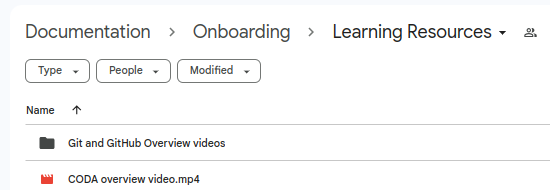

Never Use Video?
or... Video as Docs (as Code)?
Shane Crowley
Note: this is not about general video production...
Opening Thoughts
- Why should we avoid video?
- What are the specific problems?
- If we could solve those, would we use video?
- Which things are videos good at documenting?
- Are we documenting them well without video?
- Can/should Technical Authors help with video?
Some examples where we do use video...

Documenting a graphical user interface
- Upload an image
- Pan with RMB
- Rotate with LMD
- Zoom with pinch
- Adjust with picker and checkboxes
- Choose format to download
Complex GUIs
The Blender GUI has to be learned...
Multiple contexts
PS C:\Users\shane> ubuntu.exe
shane@ubuntu-wsl:~$
shane@ubuntu-wsl:~$ ssh shane@ubuntu-server
shane@ubuntu-server:~$ multipass shell ubuntu-vm
shane@ubuntu-vm:~$ exit
shane@ubuntu-server:~$ exit
shane@ubuntu-wsl:~$ exit
PS C:\Users\shane>
Videos might be good for: multiple contexts, concurrent events...
Video as code: Asciinema
Solves specific problems with video...Can be copied, can be source-controlled...
[2.313985, "o", "\u001b[?2004h\u001b[1;38;5;140m~\u001b[1;38;5;620m\u001b[1;38;5;180m ❯ \u001b[00m"]
[2.620703, "o", "c"]
[2.794014, "o", "d"]
[2.879457, "o", " "]
[3.112576, "o", "t"]
[3.199156, "o", "e"]
[3.344174, "o", "s"]
[3.438923, "o", "t"]
[3.762072, "o", "\r\n\u001b[?2004l\r"]
[3.778942, "o", "\u001b[?2004h\u001b[1;38;5;140m~/test\u001b[1;38;5;620m\u001b[1;38;5;180m ❯ \u001b[00m"]
[4.716887, "o", "e"]
[4.879944, "o", "c"]
[4.967376, "o", "h"]
[5.147111, "o", "o"]
[5.351878, "o", " "]
[5.939624, "o", "\""]
[6.87844, "o", "p"]
[6.988062, "o", "r"]
[7.202012, "o", "i"]
[7.24857, "o", "n"]
[7.309504, "o", "t"]
[8.288656, "o", "("]
[9.015461, "o", "'"]
[9.367201, "o", "h"]
[9.497635, "o", "e"]
[9.828605, "o", "l"]
[9.961116, "o", "l"]
[10.119946, "o", "o"]
[10.513969, "o", " "]
[10.61583, "o", "w"]
[10.720114, "o", "o"]
[10.811695, "o", "r"]
[10.891264, "o", "l"]
[10.985645, "o", "d"]
[11.932508, "o", "'"]
[12.631572, "o", ")"]
[14.300431, "o", "\""]
[14.685552, "o", " "]
Video as code: VHS
# test.tape
Type "mkdir test"
Sleep 500ms
Enter
Type "cd test"
Enter
Sleep 1s
Type `echo 'print("hello world")' > test.py`
Sleep 1s
Enter
Sleep 2s
Type "python3 test.py"
Sleep 500ms
Enter
Sleep 2.5s

Source is readable and editable
Video generation can be automated...
Video as code: Motion Canvas
- Programmable motion graphics in JS/TS
- Aimed at development use cases
- Includes built-in previewer/editor
...
...
yield* all(
codeLeft().code.append(`dlv debug main.go`),
codeRight().code.append(`package main`),
codeRight().code.append('\n', 1.6),
codeRight().code.append('\nfunc calculateAverage(numbers []int) float64 {', 1.6),
);
...
...
Video as code: Manim
- Python library
- Written and popularised by 3Blue1Brown
- Targeted at mathematical exposition
class CodeFromString(Scene):
def construct(self):
code = '''
$ multipass find
$ multipass launch noble
Launched: coherent-trumpetfish
$
'''
Scripting videos
Why did my Git video become three videos...
Types of video
- Does Diataxis apply to video?
- Is video good at specific Diataxis types?
- Are video demos something entirely different?
- Can/should we TAs help with authoring videos?